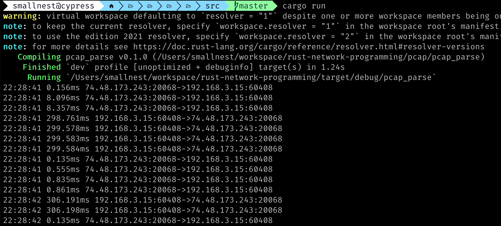

前两篇文章介绍了C++和Go中利用TCP Option中的时间戳实现计算网络时延。基于“用Rust重写一切”的哲学，今天我们来看看Rust中如何做这个事情。夜深人静，再肝一篇关于网络编程的文章。
Rust中还没有和 gopacket一样功能强大的包，它的pcap用来捕获网络包没有问题，但是缺乏解析的能力，所以我们使用另外一个包pdu来实现网络包的解析。
当然rust生态圈中还有其他的包捕获库如pnet、包解析库如etherparse等，但是我选择了pcap和pdu，因为针对这篇文章的场景，它们用起来很顺手。
为了简单起见，我们不像前两篇文章那样的程序那么复杂，还要解析参数，针对参数做不同的处理，这次Rust实现的程序中，我们主要实现其最核心的功能：
- 捕获 TCP 包
- 解析TCP选项中的时间戳
- 计算时延
我是在Mac mini的进行开发和运行的，理论在Linux上也是可以运行的。
你可能需要安装libpcap库。
Mac上可能你需要临时设置权限，才有可能正常运行程序：
1
| sudo chmod 666 /dev/bpf*
|
首先看看程序运行的效果：

那么程序一开始，我们开始要使用pcap捕获包：
1 2 3 4 5 6 7 8 9 10 11 12 13 14 15 16 17 18 19 20 21 22 23 24 25 26 27 28 29 30
| use std::net::{Ipv4Addr,Ipv6Addr}; use std::ops::Sub; use std::time::{Duration, UNIX_EPOCH}; use chrono::{DateTime, Local}; use macaddr::MacAddr; use pcap; use pdu::*; use libc; fn main() { let mut map = std::collections::HashMap::new(); let mut cap = pcap::Capture::from_device("en1") .unwrap() .immediate_mode(true) .open() .unwrap(); while let Ok(packet) = cap.next_packet() { ...... } }
|
目前我们只能得到捕获的包信息，包括pcap增加的头信息(捕获时间、包长度等)和包的数据。
我们需要解析包的数据，得到TCP包，然后解析TCP选项中的时间戳。目前pcap不能帮助我们了。
我们在那个while循环中一步一步补充省略的代码：
1 2 3 4 5 6 7 8 9 10 11 12 13 14 15 16 17 18 19 20 21 22 23 24 25 26 27 28 29 30 31 32 33 34 35 36 37
| let ethernet = EthernetPdu::new(&packet.data).unwrap(); let _src_mac = MacAddr::from(ethernet.source_address()); let _dst_mac = MacAddr::from(ethernet.destination_address()); let ei = ethernet.inner(); let (src_ip,dst_ip, tcp) = match ei { Ok(Ethernet::Ipv4(ref ip)) => { let src_ip = Ipv4Addr::from(ip.source_address()).to_string(); let dst_ip = Ipv4Addr::from(ip.destination_address()).to_string(); let tcp = match ip.inner() { Ok(Ipv4::Tcp(tcp)) => Some(tcp), _ => None }; (src_ip,dst_ip,tcp) } Ok(Ethernet::Ipv6(ref ip)) => { let src_ip = Ipv6Addr::from(ip.source_address()).to_string(); let dst_ip = Ipv6Addr::from(ip.destination_address()).to_string(); let tcp = match ip.inner() { Ok(Ipv6::Tcp(tcp)) => Some(tcp), _ => None }; (src_ip,dst_ip,tcp) } _ => (String::new(),String::new(),None) }; ......
|
首先解析出ethernet层,和gopacket调用方法不同，但是一样很简洁。
ethernet中包含源目的Mac地址，如果你需要，你可以调用相应的方法获取它们。本程序不需要这两个信息，忽略即可。
接下来解析IP层,这会涉及到ipv4和ipv6两种情况，我们分别处理。
1 2 3 4 5 6 7 8 9 10 11 12 13 14 15 16 17 18 19 20 21 22 23 24 25 26 27 28 29 30 31 32
| let ei = ethernet.inner(); let (src_ip,dst_ip, tcp) = match ei { Ok(Ethernet::Ipv4(ref ip)) => { let src_ip = Ipv4Addr::from(ip.source_address()).to_string(); let dst_ip = Ipv4Addr::from(ip.destination_address()).to_string(); let tcp = match ip.inner() { Ok(Ipv4::Tcp(tcp)) => Some(tcp), _ => None }; (src_ip,dst_ip,tcp) } Ok(Ethernet::Ipv6(ref ip)) => { let src_ip = Ipv6Addr::from(ip.source_address()).to_string(); let dst_ip = Ipv6Addr::from(ip.destination_address()).to_string(); let tcp = match ip.inner() { Ok(Ipv6::Tcp(tcp)) => Some(tcp), _ => None }; (src_ip,dst_ip,tcp) } _ => (String::new(),String::new(),None) }; if tcp.is_none() { continue; } let tcp = tcp.unwrap();
|
调用inner方法就可以得到IP层的信息，我们处理ipv4和ipv6两种情况，分别获取源目的IP地址和TCP层这三个数据。
因为一开始我们没有设置filter,所以这里捕获的包很多，比如UDP的包、ARP的包，我们在这里检查包是否是TCP包，如果不是，我们忽略这个包。当然最好是一开始就设置filter，性能会更好。
接下来我们解析TCP选项中的时间戳：
1 2 3 4 5 6 7 8 9 10 11 12 13 14 15 16
| let ts = tcp.options().find_map(|option| { match option { TcpOption::Timestamp{val,ecr} => { Some((val, ecr)) } _ => None } }); if ts.is_none() { continue; } if ts.unwrap().1 == 0 && !tcp.syn(){ continue; }
|
pdu库的好处是方便解析TCP以及它的选项。TCP的选项可能有好几个，我们只match时间戳的那个，得到时间戳的值和echo reply的值。
接下来我们处理数据。首先根据五元组和tval为key,将这个flow的信息存储到map中：
1 2 3 4
| let key = format!("{}:{}->{}:{}-{}", src_ip, tcp.source_port(),dst_ip,tcp.destination_port(),ts.unwrap().0); if !map.contains_key(key.as_str()) { map.insert(key, packet.header.ts); }
|
然后我们找反向的key,如果存在，就说明有去向，当前处理的是回向，我们计算两个捕获的值的差，就是时延：
1 2 3 4 5 6 7
| let reverse_key = format!("{}:{}->{}:{}-{}", dst_ip, tcp.destination_port(),src_ip,tcp.source_port(),ts.unwrap().1); if map.contains_key(reverse_key.as_str()) { map.get(reverse_key.as_str()).map(|ts| { let rtt = timeval_diff_str(ts,&packet.header.ts); println!("{} {} {}:{}->{}:{}", timeval_to_current_time_str(&packet.header.ts), rtt,dst_ip, tcp.destination_port(),src_ip,tcp.source_port()); }); }
|
当然为了避免map中的数据越积越多，我们可以定期清理一下，这里我们根据map中的元素的数量决定要不要清理：
1 2 3 4 5 6 7 8
| if map.len() > 10_000 { map.retain(|_,v| { let now = std::time::SystemTime::now(); let duration = now.duration_since(UNIX_EPOCH).unwrap(); let ts = Duration::new(v.tv_sec as u64, v.tv_usec as u32 * 1000); duration.sub(ts).as_secs() < 60 }); }
|
然后补充两个计算时间的辅助程序，这就是这个程序的全部代码了:
1 2 3 4 5 6 7 8 9 10 11 12 13 14 15 16 17 18 19 20 21 22 23 24 25 26 27 28 29
| fn timeval_to_current_time_str(tv: &libc::timeval) -> String { let secs = tv.tv_sec as u64; let nsecs = (tv.tv_usec as u32 * 1000) as u64; let duration = UNIX_EPOCH + std::time::Duration::new(secs, nsecs as u32); let datetime = DateTime::<Local>::from(duration); datetime.format("%H:%M:%S").to_string() } fn timeval_diff_str(start: &libc::timeval, end: &libc::timeval) -> String { let secs = end.tv_sec as i64 - start.tv_sec as i64; let usecs = end.tv_usec as i64 - start.tv_usec as i64; let (secs, usecs) = if usecs < 0 { (secs - 1, usecs + 1_000_000) } else { (secs, usecs) }; format_duration(secs, usecs as u32) } fn format_duration(secs: i64, usecs: u32) -> String { let duration = secs * 1_000_000 + usecs as i64; match duration { 0..=999_999 => format!("{:.3}ms", duration as f64 / 1_000.0), _ => format!("{:.6}s", duration as f64 / 1_000_000.0), } }
|
你对Rust实现的 pping 有什么看法，欢迎在评论区留下你宝贵的意见。